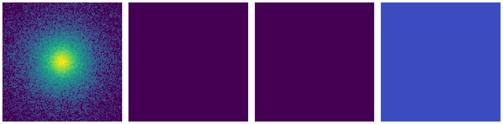
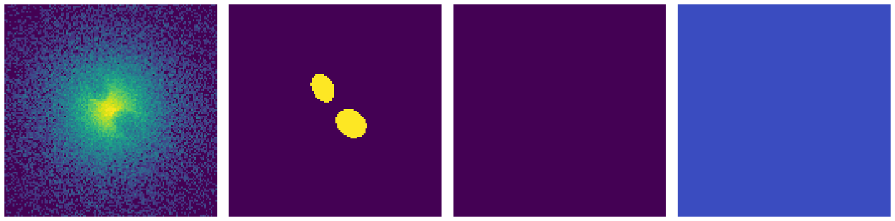
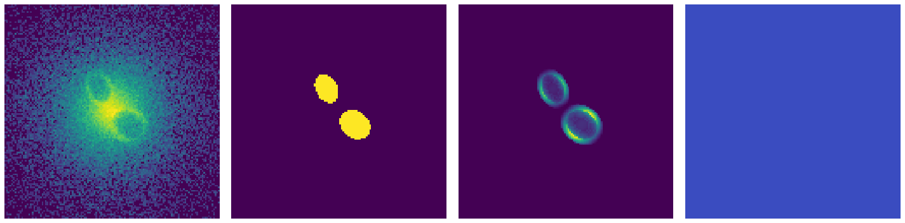
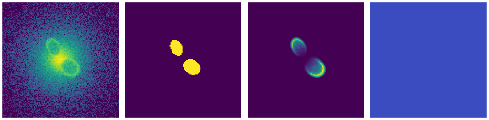
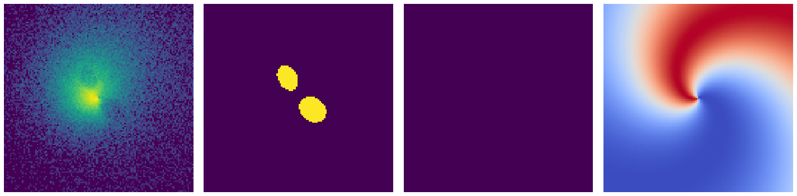

Training of the CADET pipeline
The convolutional neural network was trained on artificial images of simulated galaxies which were
produced by generating symmetric 3D beta models
(Cavaliere et al. 1978)
into which we randomly inserted ellipsoidal cavities. The parameter ranges and
distributions used for generating models of galaxies and X-ray cavities were
estimated from the measurements of nearby galaxies (for more info see the
Plšek et al. 2023).
Besides X-ray cavities, we added other features such as bright rims around X-ray cavities
and antisymmetric spiral perturbations resembling gas sloshing (see image below) to imitate the gas distribution of real galaxies.
The produced models were summed into 2D images a noised using Poisson statistics to resemble real Chandra-like images.
The corresponding labels were produced similarly by summing ellipsoidal cavity masks
into 2D images and binning them to contain either ones (inside the cavity) and zeros (outside of it).
The convolutional neural network (CNN) was implemented using a high-level Python Keras
library with Tensorflow back-end. The CNN was written using a functional Keras
API which enables saving and loading the model into the Hierarchical Data Format (HDF5) without
the need to re-defining the model when loading. For the clustering task, we used the DBSCAN
implementation in the Scikit-Learn library. For monitoring learning curves, comparing
final test statistics and selecting optimal hyper-parameters, we used the Tensorboard dash-boarding tool.
Elliptical β-models and ellipsoidal cavities were generated with the use of the
JAX library (version 0.2.26).
The training data was created `on the fly` during the training of the network - a mini-batch of images
was generated by the data generator function before each gradient update. Thanks to the Graphical
Processing Unit (GPU) support of the \textit{JAX} library, training images were generated in a
vectorized way using the same GPU as was used for training of the network. This dramatically improved
the data generation time compared to generating the data using a CPU and also enabled additional
tweaking of the parameters of training images between individual training runs.
    